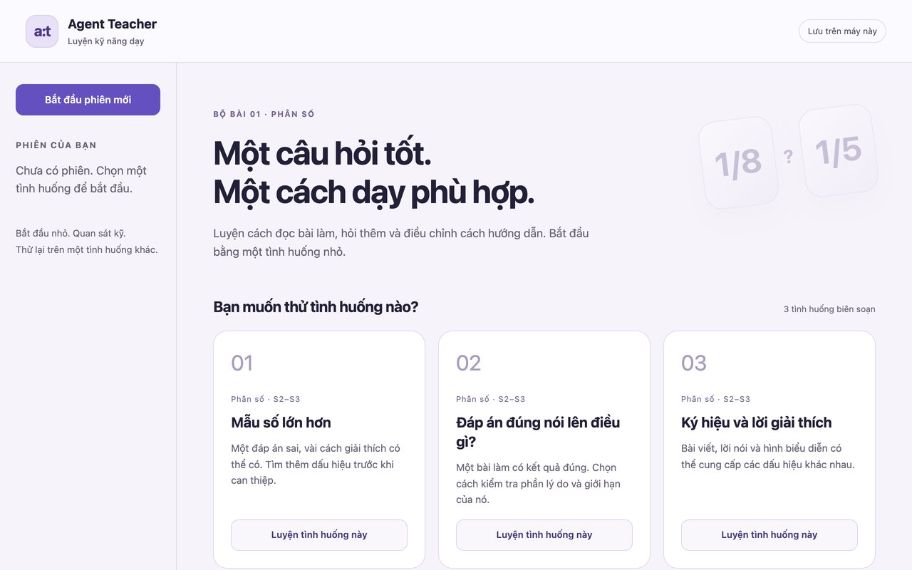
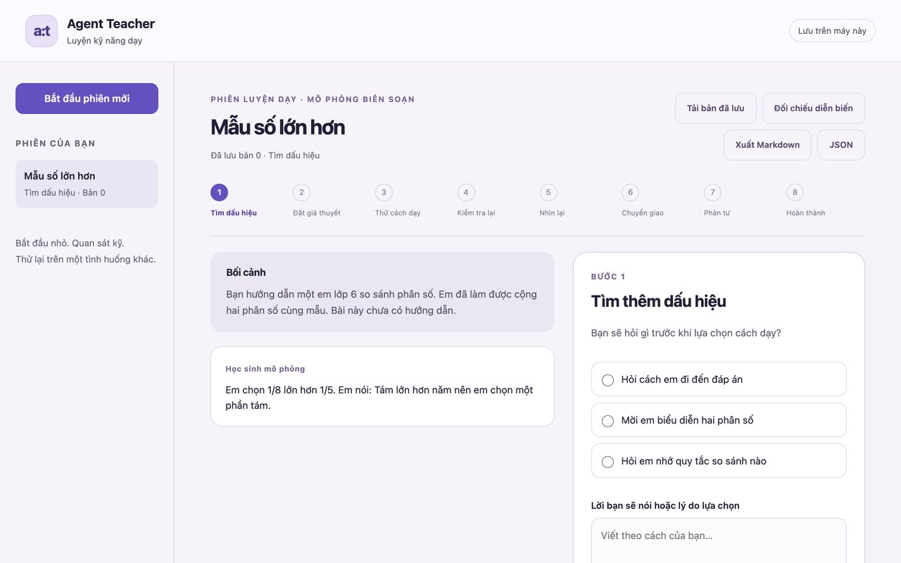

design:os · pedagogy · Agent Teacher
Practise teaching on authored cases. Publish only knowledge you can defend.
A pedagogy knowledge library graded by evidence, a local rehearsal where a teacher probes, interprets, teaches and reflects on authored fraction cases, and a publication pipeline that validates a draft before a separate apply step. No model calls, no certification claims.

The local rehearsal at start: one question set, three authored fraction cases, a session sidebar. Served on 127.0.0.1 from this checkout.
captured 2026-09-18 · run_rehearsal.pyWhat it is
- Knowledge library
- 92 recordsten numbered areas, one versioned ontology
- Stages
- S0–S7 · AL0–AL7education stages and AI-assistance levels, kept separate
- Evidence
- graded, with refusal gatesclaim status, effect metric, applicability, review status read separately
- Rehearsal
- 3 authored casesprobe, interpret, teach, check, review, transfer, reflect, complete
- Tests
- 98 tests · 11 modulestemporary corpora and databases; stdlib runner
- Runtime
- Python 3.10+PyYAML and markdown-it-py only for registry and publication
Why this, compared with a skills pack, a content generator or a syllabus
What Agent Teacher does that the alternatives do not, or do differently. Every line below is stated in the README with its boundary.
Evidence is graded, not asserted
Every record carries verification, claim status, effect metric, applicability and review status as separate fields; legacy grades confer no expert review.
A rehearsal you can run
Sessions and events in SQLite with revision checks, reopening, replay and Markdown/JSON export; student replies and coaching follow authored branches.
Publication that can refuse
The registry checks metadata, canonical IDs, aliases and typed references; the publisher validates a draft, locks the filesystem, and recovers an interrupted transaction explicitly.
No model in the loop
The application makes no external model calls; an optional provider must be selected explicitly. Nothing here certifies teaching competence.
A worked full-year course
Vietnamese Grade 1 mathematics: 105 period plans over 35 weeks, a requirements map, teacher guidance and sample assessments, with its own workflow evaluation.
Where the alternatives win, stated plainly: education-agent-skills drops 165 skills straight into Claude Code, Codex or Hermes; AI-Teaching-Agent generates labs, exams and grading workflows; Pyragogy ships a hosted syllabus. Still open here: source appraisal, named expert review and a real-user pilot. Implementation status.
Run it
From the project root. Port 0 picks a free port; the default is 8876. Data goes to .data/rehearsal.sqlite3; use --data-dir for a separate test or pilot. Single-user, loopback only.
git clone https://github.com/jangtrinh/design-os-pedagogy.git && cd design-os-pedagogy
python3 run_rehearsal.py --port 0Pick a case.
step 0
Session view: the eight-step rail, the simulated student, your first probe and the words you would say.
step 1 · tìm dấu hiệu
Prepare a module without writing anything, then verify.
.venv/bin/python -B tools/pedagogy_pipeline.py "Fraction teaching routine" --stage S2 --archetype methods --dry-run
.venv/bin/python -B -m unittest discover -s tests -v
.venv/bin/python -B tools/verify_links.pyImport is not scientific approval; the link auditor checks local paths and anchors, not scientific support. Publication and interruption recovery.
The library map
Start with the master map. The authoring model connects knowledge, experience, diagnosis, practice, feedback, transfer and an implementation protocol.
00-system
Ontology, schema, epistemic policy and authoring contract
10-foundations · 20-stages
Foundations and education-stage guides, S0 through S7
30-pedagogy · 40-disciplines
Methods, assessment and disciplinary practice
50-practice-library · 60-evidence
Cases, source notes, claims and estimates
70-capabilities · 80-professor-development
Teaching capabilities and professional learning
90-agent-runtime
Runtime specifications, prompts and evaluation proposals
rehearsal
The implemented local fraction rehearsal
tools · tests
Registry, publication, local link auditing and executable tests
FAQ
Does it call a model?
No. The rehearsal, registry and publisher make no external model calls. Free text is stored, not semantically graded.
Does it certify teaching competence?
No. Passing software tests or a clean reference graph does not establish teaching effectiveness; authored examples are not observed classroom outcomes.
What is implemented, and what is a specification?
The Vietnamese fraction rehearsal, the registry and the publication pipeline are implemented and tested. The broader tutor runtime in 90-agent-runtime remains a specification.
What remains before a real pilot?
Source appraisal, named expert review and a real-user pilot are pending; the fraction pilot document lists the human work.
Which languages?
The rehearsal is Vietnamese; the README and the master guide exist in English and Vietnamese.
What is the license?
Not yet declared in the repository. Until a LICENSE file lands, no reuse terms are stated.